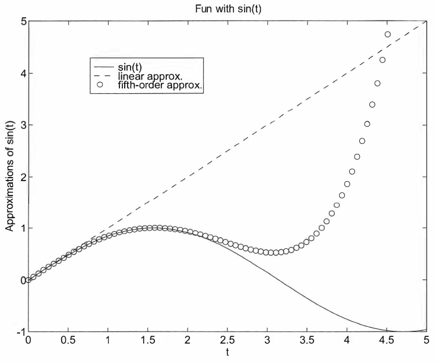
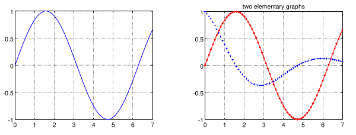
import matplotlib.pyplot as plt
import numpy as np
fig, ax = plt.subplots()
# CODE FOR PLOTTING
# ...
# FINALLY DO
plt.show()
ax variable (handle) is utilized in order to manage the figuresfigsize argument in plt.subplots()figsize = (height, width), height and width lengths are given in inchesimport matplotlib.pyplot as plt
import numpy as np
fig, ax = plt.subplots(figsize = (8,10))
# CODE FOR PLOTTING
# ...
# FINALLY DO
plt.show()
plot functionplot: plots any x and y pairsax.plot(xvalues, yvalues, 'style-option')
where
xvalues: 1D arrayyvalues: 1D array'style-option' specifies
ax.plot(x,y): plots y versus x with a solid lineax.plot(x,y,'--'): plots y versus x with a dashed lineax.plot(x,y,'r--'): plots y versus x with a red dashed lineax.plot(x,y,'r^'): plots y versus x with red trianglesax.plot(x,y,'r^-'): plots y versus x with red triangles on a solid lineimport matplotlib.pyplot as plt
import numpy as np
fig, ax = plt.subplots()
t = np.linspace(0,2*np.pi,100); # generate x data
f = np.sin(t); # generate y data
ax.plot(t, f); # plot with a solid line
plt.show()
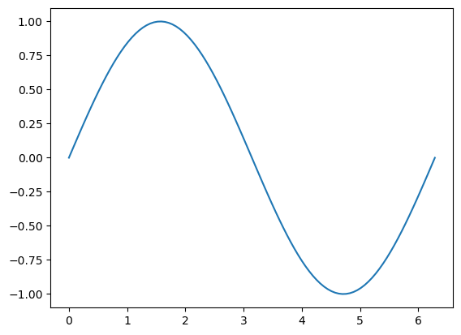
'style-option'| Color | Line | Marker |
|---|---|---|
y yellow |
- solid |
+ plus sign |
m magenta |
-- dashed |
o circle |
c cyan |
: dotted |
* asterisk |
r red |
-. dash-dot |
x x-mark |
g green |
none no line |
. point |
b blue |
^ up triangle |
|
w white |
s square |
|
k black |
d diamond |
ax.plot(x,y,'r'): plots y versus x with a red solid lineax.plot(x,y,':'): plots y versus x with a dotted lineax.plot(x,y,'b--'): plots y versus x with a blue dashed lineax.plot(x,y,'+'): plots y versus x as unconnected points marked by +'style-option' exampleimport matplotlib.pyplot as plt
import numpy as np
fig, ax = plt.subplots()
t = np.linspace(0,2*np.pi,100); # generate x data
f = np.sin(t); # generate y data
ax.plot(t, f, "rs-"); # plot with connected red squares
plt.show()
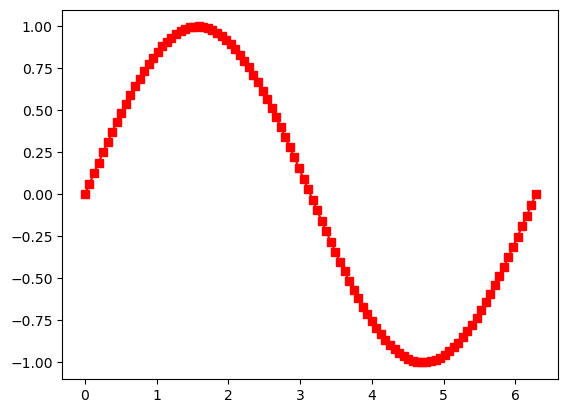
ax.set_xlabel('x (m)'): labels the x-axis with x (m)ax.set_ylabel('p (Pa)'): labels the y-axis with p (Pa)ax.set_title('Pressure Variation'): titles the plot with Pressure Variationax.text(5,-180,'Note this dip'): annotates "Note this dip" at the location (5, -180) in the plot coordinatesimport matplotlib.pyplot as plt
import numpy as np
fig, ax = plt.subplots()
x = np.linspace(0,2*np.pi,100)
p = np.sin(x)*np.exp(x)
ax.plot(x, p, 'k')
ax.set_xlabel('x (m)') # creates the label for x-axis
ax.set_ylabel('p (Pa)') # creates the label for y-axis
ax.set_title('Pressure Variation') # creates a title
ax.annotate('Note this dip', (5,-180)) # annotates a text
plt.show()
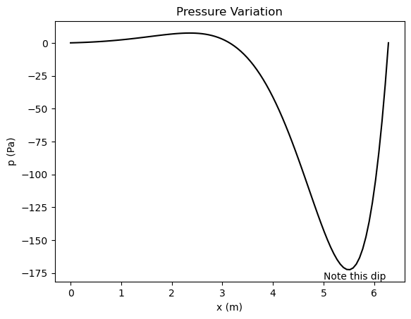
ax.set_xlim(xmin, xmax)
ax.set_ylim(ymin, ymax)
where
xmin and xmax specify the x-axis limitsymin and ymax specify the y-axis limitsEx.:
ax.set_xlim(-5, 10) sets the x-axis from -5 to 10ax.set_ylim(2, 22) sets the y-axis from 2 to 22import matplotlib.pyplot as plt
import numpy as np
fig, ax = plt.subplots()
x = np.linspace(0,2*np.pi,100)
p = np.sin(x)*np.exp(x)
ax.plot(x, p, 'k')
ax.set_xlabel('x (m)') # creates the label for x-axis
ax.set_ylabel('p (Pa)') # creates the label for y-axis
ax.set_title('Pressure Variation') # creates a title
ax.annotate('Note this dip', (5,-180)) # annotates a text
ax.set_xlim(0, x[-1]) # adjust x axis limits
ax.set_ylim(np.min(p)-20, np.max(p)+20) # adjust y axis limits
plt.show()
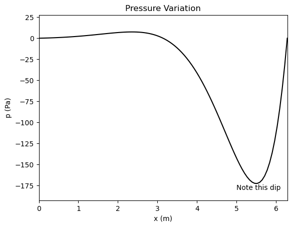
ax.set_xlim(left=-5): sets the lower x-axis limit at -5, and lets the upper limit to be set automaticallyax.set_xlim(right=10): sets the upper x-axis limit at 10, and lets the lower limit to be set automaticallyax.set_ylim(bottom=-5): sets the lower y-axis limit at -5, and lets the upper limit to be set automaticallyax.set_ylim(top=10): sets the upper y-axis limit at 10, and lets the lower limit to be set automaticallyax.grid() function draws gridimport matplotlib.pyplot as plt
import numpy as np
fig, ax = plt.subplots()
x = np.linspace(0,2*np.pi,100)
p = np.sin(x)*np.exp(x)
ax.plot(x, p, 'k')
ax.set_xlabel('x (m)') # creates the label for x-axis
ax.set_ylabel('p (Pa)') # creates the label for y-axis
ax.set_title('Pressure Variation') # creates a title
ax.annotate('Note this dip', (5,-180)) # annotates a text
ax.grid()
plt.show()
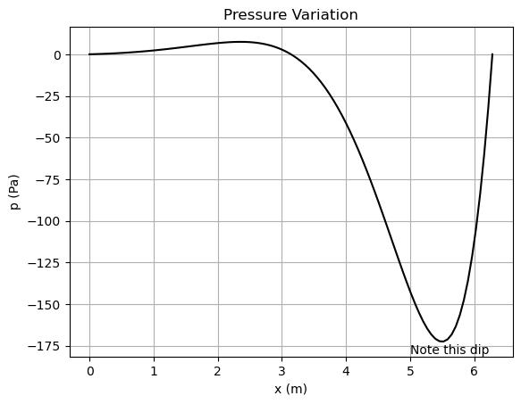
ax.plot function execution, a plot is generated on the same figureEx.:
import matplotlib.pyplot as plt
import numpy as np
# Generate data points
x1 = np.linspace(0, 100, 50)
x2 = np.linspace(0, 100, 1000)
f = 20*x1 + 3
g = 3*x1**2 + np.sqrt(x1)
h = 3e3*np.sin(5*x2) * np.exp(-0.5*x2)
# Plot an overlay 2D plot for f, g, h
fig, ax = plt.subplots()
ax.plot(x1, f, "o", label = "f(x) = 20x + 3")
ax.plot(x1, g, "^-", label = "g(x) = 3x^2 + x^(1/2)")
ax.plot(x2, h, "-", label = "h(x) = 3*10^3*sin(5x) * exp(-0.5x)")
ax.legend(loc="lower right")
# Other stuff
ax.set(title = "Plot for f(x), g(x), and h(x)", xlabel = "x", ylabel = "y")
ax.grid()
ax.set_xlim(left=-0.5, right=40)
ax.set_ylim(top=5000)
plt.show()
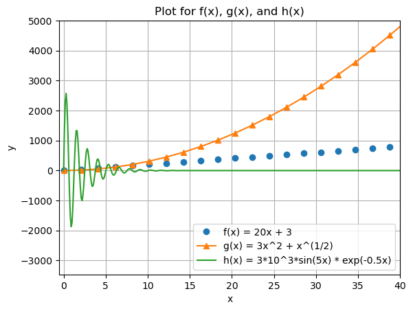
As depicted in the plot, when there are more than one data plotted, legend is placed on the frame to designate the names of the data.
ax.legend(): produces legend using the text provided in label keyword in the ax.plot functionax.legend(loc), where loc can take
'upper right', 'upper left', 'lower left', 'lower right', 'right', 'center left', 'center right', 'lower center', 'upper center', 'center'plt.subplots(...) callax usageplt.tight_layout callimport matplotlib.pyplot as plt
import numpy as np
fig, ax = plt.subplots(1,2)
x = np.linspace(0,2*np.pi,100)
p = np.sin(x)*np.exp(x)
ax[0].plot(x, p, 'k')
ax[0].set_xlabel('x (m)') # creates the label for x-axis
ax[0].set_ylabel('p (Pa)') # creates the label for y-axis
ax[0].set_title('Pressure Variation') # creates a title
ax[0].grid()
g = np.sin(5*x)/x
ax[1].plot(x, g, 'ro-')
ax[1].set_xlabel('x') # creates the label for x-axis
ax[1].set_ylabel('sin(5x)/x') # creates the label for y-axis
ax[1].set_title('sin(5x)/x vs x') # creates a title
plt.tight_layout()
plt.show()
plt.subplots(1,2) initializes \(1\times2\) subplotsax[0] and ax[1] are for first and second subplots, respectivelyplt.tight_layout() adjusts the gaps between the figures such that labels and titles are clearly seen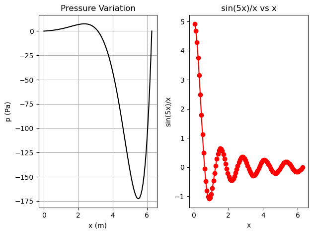
import matplotlib.pyplot as plt
import numpy as np
x = np.linspace(0,2*np.pi,100)
y1 = np.sin(x)
y2 = x
y3 = x - (x**3)/6 + (x**5)/120
y4 = np.sin(x)*np.exp(x)
fig, ax = plt.subplots(2,2)
# plotting the first frame in a 2x2 grid
ax[0,0].plot(x,y1)
ax[0,0].set_xlabel("x")
ax[0,0].set_ylabel("y1")
ax[0,0].set_title("First subplot")
ax[0,0].grid()
# plotting the second frame in a 2x2 grid
ax[0,1].plot(x,y2)
ax[0,1].set_xlabel("x")
ax[0,1].set_ylabel("y2")
ax[0,1].set_title("Second subplot")
ax[0,1].grid()
# plotting the third frame in a 2x2 grid
ax[1,0].plot(x,y3)
ax[1,0].set_xlabel("x");
ax[1,0].set_ylabel("y3");
ax[1,0].set_title("Third subplot");
ax[1,0].grid()
# plotting the fourth frame in a 2x2 grid
ax[1,1].plot(x,y4)
ax[1,1].set_xlabel("x");
ax[1,1].set_ylabel("y4");
ax[1,1].set_title("Fourth subplot");
ax[1,1].grid()
plt.tight_layout()
plt.show()
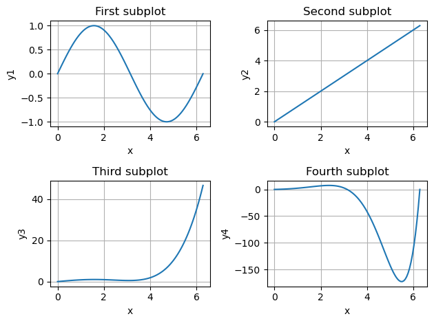
ax[row,col] conventionSometimes logarithmic scale is utilized in addition to linear (default) scale:
ax.set_xscale('log')ax.set_yscale('log')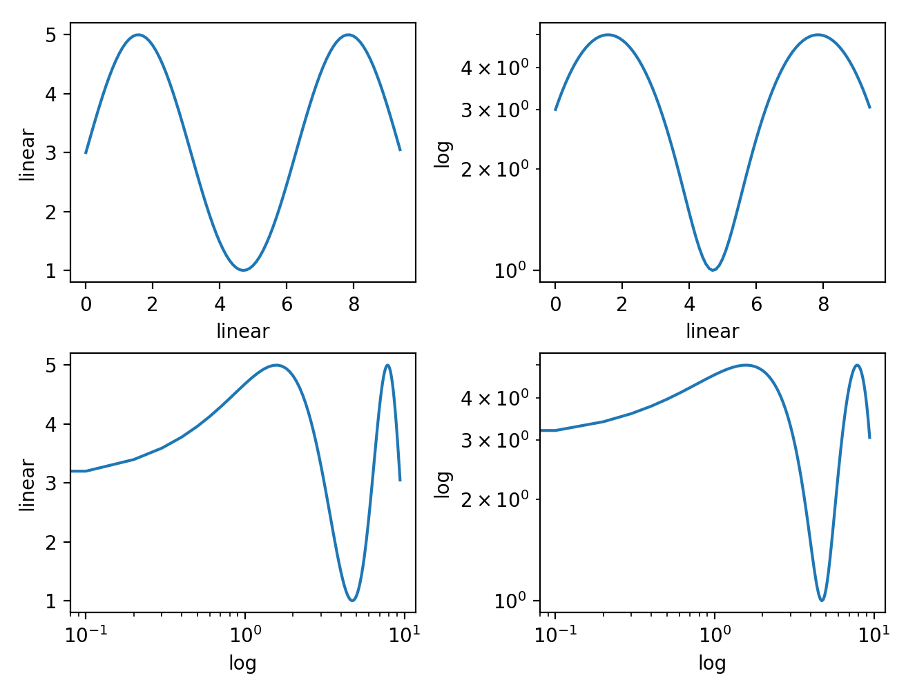
import matplotlib.pyplot as plt
import numpy as np
x = np.linspace(0,10,100)
t = np.linspace(0,4,50)
f = np.exp(-x) * np.sin(2*np.pi*x)
g = 5*x
h = 1/2 * 9.81 * t**2
fig, ax = plt.subplots()
ax.plot(x,f,"k")
ax.grid()
ax.set_title("f(x) vs x")
ax.set_xlabel("x")
ax.set_ylabel("f(x)")
plt.show()
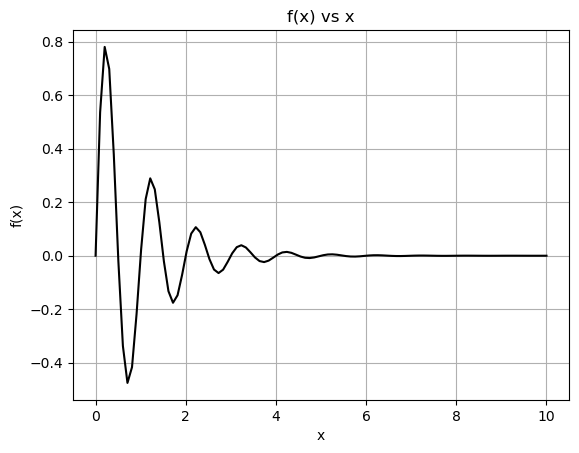
import matplotlib.pyplot as plt
import numpy as np
# DATA GENERATION
## DEFINE FUNCTIONS
def f(x):
y = np.array([])
for i in np.arange(0,np.size(x),1):
if (x[i] >= 0) & (x[i] <= np.pi/2):
y = np.append(y, np.sin(x[i]))
elif (x[i] >= np.pi) & (x[i] <= 3*np.pi/2):
y = np.append(y, np.sin(x[i]))
else:
y = np.append(y, 0)
return y
def g(x):
y = -4 * x**2 + 3
return y
def h(x):
y = 3*np.ones((np.size(x),))
return y
## GENERATE DATA
x = np.linspace(0, 2*np.pi, 100)
y1 = f(x)
y2 = g(x)
y3 = h(x)
# PLOTTING
fig, ax = plt.subplots(1,2)
ax[0].plot(x,y1,"kd-")
ax[1].plot(x,y2,"gs",label="g(x)")
ax[1].plot(x,y3,"ro",label="h(x)")
# OTHER STUFF: labels, titles, legend, etc.
ax[0].set_xlabel("x")
ax[0].set_ylabel("f(x)")
ax[1].set_xlabel("x")
ax[1].set_ylabel("Function output")
ax[0].set_title("f(x) vs x")
ax[1].set_title("Two functions")
ax[1].legend()
ax[0].grid()
ax[1].set_xlim(0,2)
ax[1].set_ylim(-20,10)
plt.tight_layout()
plt.show()
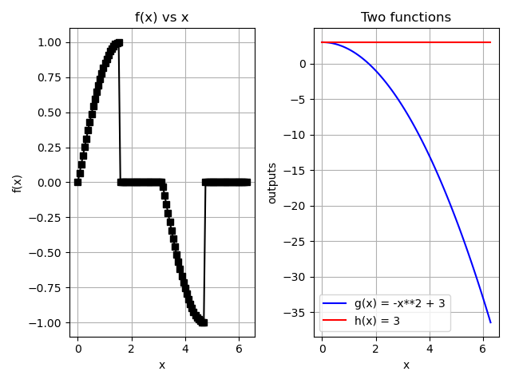